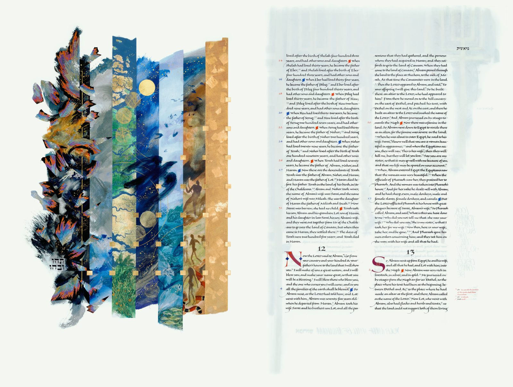
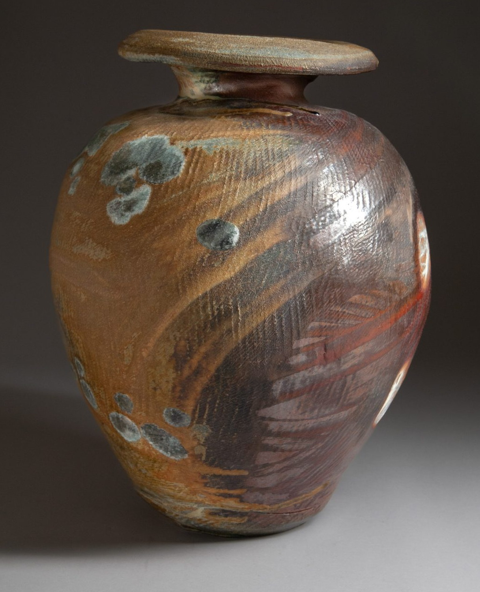

Chapter One
The Saint John's Bible

In 1998, Saint John's Abbey and University commissioned renowned calligrapher Donald Jackson to do something no Benedictine community had done in five hundred years: create a completely handwritten and illuminated Bible. Fifteen years, six scribes, and 1,127 pages of vellum later, The Saint John's Bible stands as one of the great book-arts achievements of the modern era.
The evening sale offers the complete seven-volume Heritage Edition — one of only 299 sets ever created — and one of the final four Apostles Editions still available for acquisition, alongside hand-numbered folios from the newly released Unbound Collection, including the celebrated Creation frontispiece with its seven bands of creation rising out of darkness into gold.
Live & silent auction · Heritage Edition, Apostles Edition and Unbound Collection folios
Chapter Two
Bresnahan Pottery

Richard Bresnahan has been artist-in-residence at Saint John's Pottery since 1979, working in a practice of radical locality: clay dug within thirty miles of the abbey, glazes made from flax straw and sunflower-hull ash, and firings fueled by deadfall timber from the abbey forest.
His Johanna Kiln is the largest wood-burning kiln in North America. Each firing lasts ten days and marks every vessel with effects no glaze chemist could plan — the kiln itself is the final collaborator. The sale includes a large coiled and paddled jar, a wheat-painted platter and a medium wood-fired jar, each a record of fire and patience.
Live & silent auction · Wood-fired stoneware from the Johanna Kiln
Chapter Three
An Original Picasso

The quiet headline of the evening: Toros en Vallauris, an original Picasso linoleum print — the arena, the crowd and the charging bull carved in bold black and white, with signature as present. What sets this impression apart is its provenance: a handwritten certification on the verso by Pierre Raybaud, who witnessed the creation of the original linoleum block itself.
A unique, pre-edition working proof from the estate of Pierre Raybaud himself — his handwritten attestation confirms this sheet as the first print pulled from the freshly carved matrix, before Picasso returned to the blocks to make his final changes. Guests wishing to preview the work privately may write to John@JohnPellegrene.com.
Live auction · Linoleum print (proof impression), Vallauris period, 1954
Chapter Four
Private Collections

Rounding out the evening: two deeply felt canvases by painter Yusuf Mirumbe — The Face of Hope, a meditation on unseen battles and the endurance of hope, and Brother, a return to fleeting childhood memories of family and belonging in an African homestead.
Live & silent auction · Oil on canvas